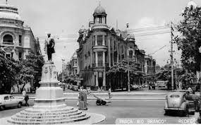
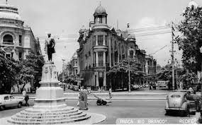

História do Marco Zero
O Marco Zero no Recife Antigo é o lugar de referência onde a cidade nasceu e todas as medidas oficiais de distâncias rodoviárias usam como ponto de partida. Seu nome é, na verdade, Praça Rio Branco e fica ao lado do Porto de Pernambuco.
Imagens
Confira algumas imagens do Marco Zero:
 

Como Chegar
O Marco Zero está localizado no Recife Antigo, próximo ao Porto do Recife, e pode ser facilmente acessado por diferentes meios de transporte.